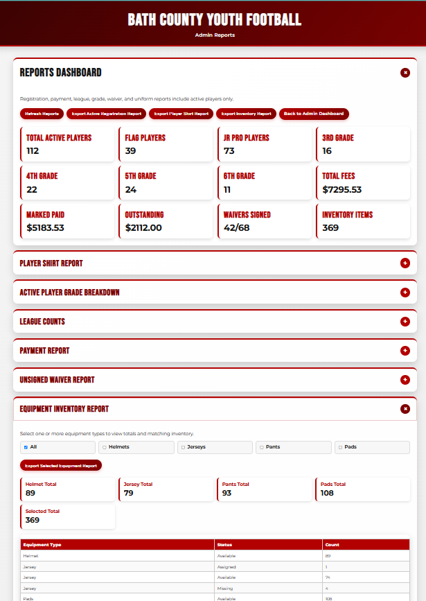

Web application / Project 04
Bath County Youth Football Registration.
A complete community registration experience connecting family enrollment, multi-player pricing rules, online payment options, role-specific dashboards, equipment administration, and reporting.
The live website displays the public homepage. Registration is required to access additional features. The screenshots below demonstrate the application’s functionality without requiring visitors to create an account.
The real-world problem
Project overview
Youth football registration involves more than collecting names. Families need to register one or more players and understand payment options, while coaches and administrators need organized, up-to-date information for managing the program.
I developed a browser-based registration and administration system for Bath County Youth Football. The front end uses HTML, CSS, and JavaScript, with Google Apps Script connecting application workflows to structured data in Google Sheets.
The goal
Create one coordinated process for player registration, family payments, and administrative tasks instead of relying on disconnected records and manual follow-up.
What it includes
Key features
- Parent registration and account workflows supporting multiple players in one family.
- Flag and Jr Pro league registration options.
- Family-based registration discounts and full-payment or payment-plan options.
- Square payment links integrated into the registration workflow.
- Separate parent, coach, and administrator dashboard views.
- Administrator-to-parent messaging and program reporting.
- Equipment inventory tracking to support administration.
- Reporting logic that excludes inactive registrations from active counts.
Implementation
How I built it
I designed the user-facing pages and connected them to Google Apps Script for the behind-the-scenes registration workflow. Google Sheets serves as the data store, with different views for parents, coaches, and administrators.
The application also accounts for family-specific registration scenarios, including multiple children, discounts, and payment choices. Reporting and equipment tools support staff after families complete registration.
Challenges & solutions
Making one system serve different users
The primary design challenge was keeping registration straightforward for families while still providing the details administrators need. I addressed this by organizing the experience around distinct user roles and consistent registration records.
Another challenge was maintaining meaningful reports when registrations changed status. Separating active and inactive registration records in reporting helps administrators work from more relevant counts.
How the system works
One workflow. Multiple experiences.
The application serves different users while keeping registration and administrative records in the same Google Sheets-backed workflow.
Family enrollment
Parents register one or more players, select a league, and review payment options and family discounts.
Application rules
JavaScript and Google Apps Script support form processing, registration details, and payment-link workflows.
Role-based views
Separate parent, coach, and administrator interfaces present information appropriate to each workflow.
Operations & reporting
Administrative reporting and equipment records help staff manage registrations and exclude inactive entries from active counts.
Business logic
Registration rules built into the experience
Registration requires more than form fields. The application accommodates Flag and Jr Pro options, families registering multiple players, discounts, and payment plans.
These values describe the program's documented 2026 registration rules, not a live pricing quote.
System design
Tools working together
A closer look
Project screenshots
See the registration experience and the role-specific tools for families and administrators. Select a screenshot to view the full-size image in a new tab.

Screenshot to be added
Behind the work
What I learned
This project strengthened my experience translating real community requirements into a browser-based application. Designing distinct parent, coach, and administrator views required thoughtful interface organization, while multi-player pricing, status-aware reporting, and equipment workflows required careful attention to business rules and structured data.